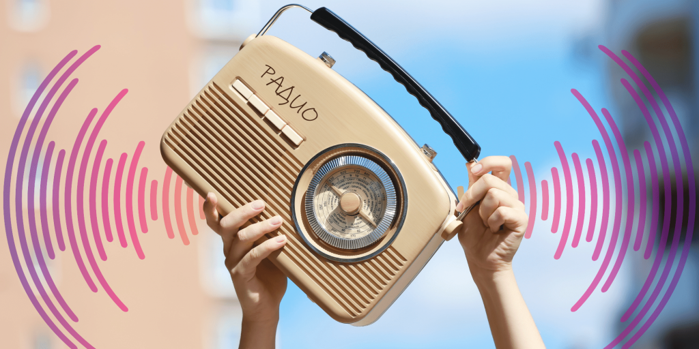
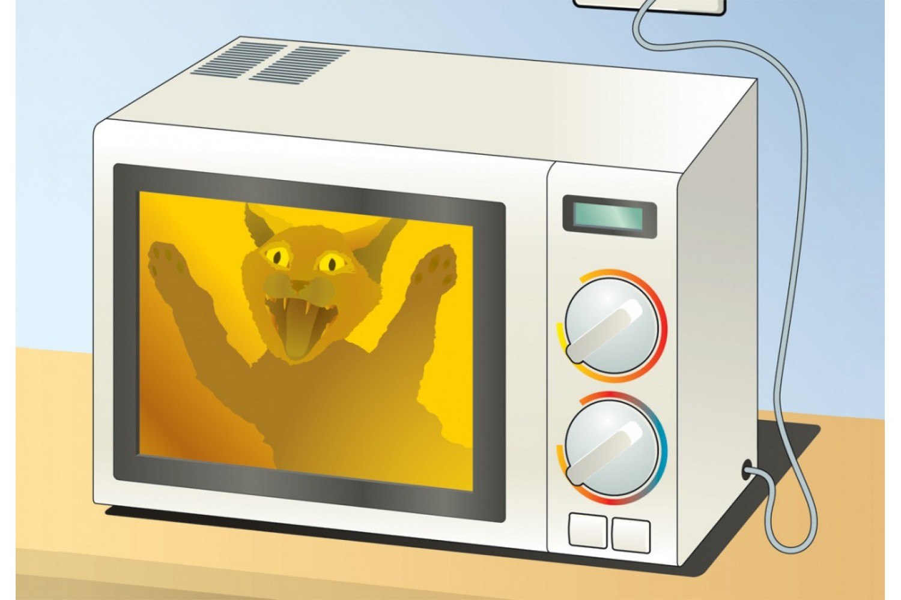
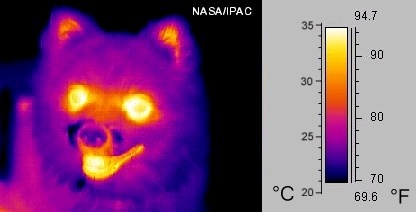
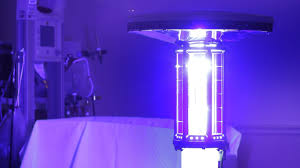
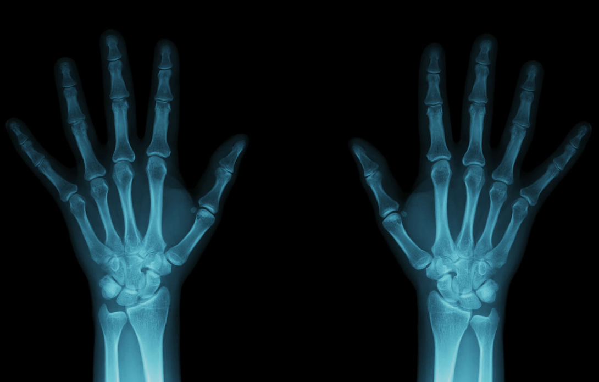
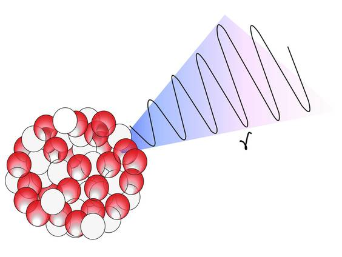
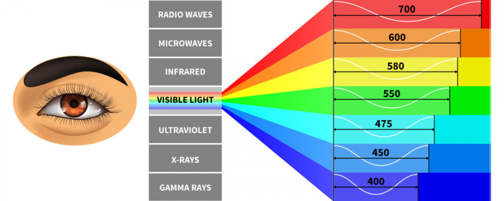

Electromagnetic waves
surround us everywhere. They are used in radio communication, television, mobile phones, Wi-Fi, and even in microwave ovens. But how can we "see" what is invisible to the human eye?What are electromagnetic waves?
Electromagnetic waves are oscillations of electric and magnetic fields that propagate through space. They can have different wavelengths and frequencies, which determine their properties and applications.
-

Used to transmit signals over long distances.
Radio waves
-

Used in satellite communication and microwave ovens.
Microwaves
-

Used in remote controls and thermal cameras.
Infrared radiation
-
The only range of electromagnetic waves we can see.
Visible light
-

Used in medicine and disinfection.
Ultraviolet radiation
-

Used in medicine for diagnostics.
X-ray radiation
-

Used in scientific research and medicine.
Gamma radiation
Why can't we see electromagnetic waves?
The human eye can only perceive visible light—a narrow range of the electromagnetic spectrum with wavelengths from 380 to 750 nanometers. Other types of electromagnetic waves (radio waves, microwaves, X-rays, etc.) are beyond our vision. However, this does not mean that they cannot be "seen" using special instruments or experiments.
How to "see" electromagnetic waves?
Although we cannot directly see electromagnetic waves, there are ways to detect and visualize them.
-
1. Radio waves
Radio:
Radio waves can be "heard" using a radio. When you tune a radio to a specific frequency, you capture electromagnetic waves that are converted into sound.Antenna and oscilloscope:
Using an antenna and an oscilloscope, you can visualize radio waves as electrical signals. -
2. Microwaves
Microwave oven
Microwaves can be "seen" by their effect on food. In a microwave oven, electromagnetic waves cause water molecules to vibrate, leading to heating.Microwave detector:
Special detectors can show the presence of microwave radiation. -
3. Infrared radiation
Thermal camera:
Infrared radiation can be seen using a thermal camera, which converts thermal energy into a visible image.Remote control:
If you point a remote control at a smartphone camera, you can see infrared light, which is invisible to the naked eye. -
4. Visible light
Human eye:
Visible light is the only range of electromagnetic waves we can see without additional instruments.Prism:
Using a prism, you can split white light into the colors of the rainbow, demonstrating different wavelengths of visible light. -
5. Ultraviolet radiation
Fluorescent materials:
Ultraviolet radiation can be "seen" by its effect on fluorescent materials, which glow under UV light.UV detectors:
Special devices can detect ultraviolet radiation. -
6. X-ray radiation
X-ray image:
X-ray radiation can be "seen" in images where it passes through soft tissues but is blocked by bones.X-ray detectors:
Used in medicine and airports for scanning. -
7. Gamma radiation
Scintillation detectors:
Gamma radiation can be detected using special detectors that convert it into visible light.
The video demonstrates the application of electromagnetic waves. Electromagnetic waves are used for the operation of wireless passes, keys, data transmission means, and many other things. We conducted an experiment with writing and reading data from a UID card using programmable ARDUINO modules, RFID, and electromagnetic waves. As you can see, they allow these operations to be performed remotely, simply through the air.